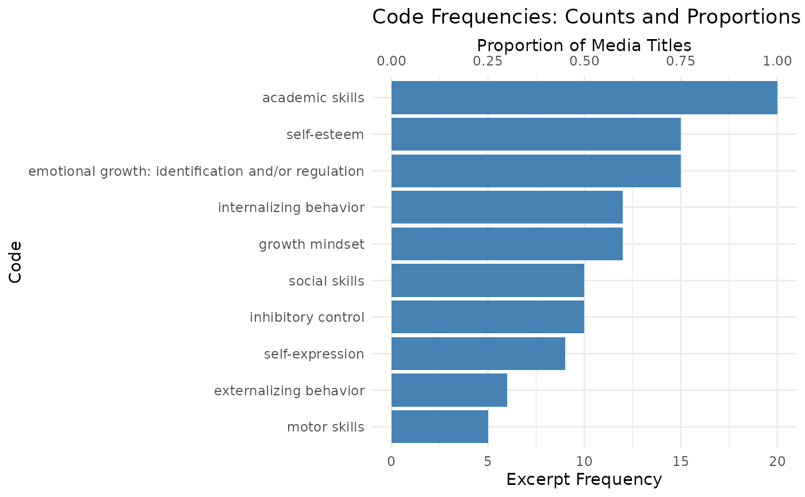

Using our same mock dataset, we can generate a summary of our codes
using the create_code_summary() function. This function
does several nifty things:
- Summarizes code counts and the proportion of transcripts/media objects they come
- Allows you to set a min count or proportion for the summary output
- Optionally plots the counts, proportions or both
- Optionally allows you to use code labels instead of variable names
(using the codebook generated by
clean_data()!)
If you knitted the Cleaning, Merging, and Exploring Qualitative
Data vignette just before this one, you already have
recoded$data_recode and
recoded$codebook_recode in your environment. The chunk
below recreates them so this article is self-contained—feel free to skip
it when reusing objects from the prior tutorial.
library(DedooseR)
library(tibble)
# Mock excerpts that mimic a Dedoose export ----------------------------------
demo_excerpts <- tribble(
~`Media Title`, ~`Excerpt Range`, ~`Excerpt Creator`, ~`Excerpt Date`,
~`Excerpt Copy`, ~`Resource Creator`, ~`Resource Date`,
~`Codes Applied Combined`,
~`Code: Motor Skills Applied`,
~`Code: Motor Skills Range`,
~`Code: Motor Skills Weight`,
~`Code: Social Skills Applied`,
~`Code: Social Skills Range`,
~`Code: Social Skills Weight`,
~`Code: Self-expression Applied`,
~`Code: Self-expression Range`,
~`Code: Self-expression Weight`,
~`Code: Emotional Regulation Applied`,
~`Code: Emotional Regulation Range`,
~`Code: Emotional Regulation Weight`,
~`Code: Emotion Identification Applied`,
~`Code: Emotion Identification Range`,
~`Code: Emotion Identification Weight`,
"Interview: Opening Circle", "Excerpt 12-56", "Aliyah", as.Date("2023-06-10"),
"Keeping the djembe rhythm steady made my hands stronger, and pairing up for call-and-response helped the nervous kids giggle and join in.",
"Camp Director", as.Date("2023-06-01"),
"Motor Skills; Social Skills; Self-expression",
"True", "1-2", 1,
"True", "1-2", 1,
"True", "1-1", 1,
"False", NA_character_, NA_real_,
"False", NA_character_, NA_real_,
"Focus Group: Rhythm Relay", "Excerpt 04-38", "Rohan", as.Date("2023-07-18"),
"During the rhythm relay, we practiced breathing between verses, and campers started naming the moods behind each beat before the next handoff.",
"Evaluation Lead", as.Date("2023-07-12"),
"Social Skills; Emotional
Regulation; Emotion Identification",
"False", NA_character_, NA_real_,
"True", "2-2", 2,
"False", NA_character_, NA_real_,
"True", "2-3", 2,
"True", "2-3", 2,
"Interview: Alumni Showcase", "Excerpt 77-112", "Aliyah", as.Date("2024-01-08"),
"When I get mad now, I write a hook about it first. It helps me spot the feeling and decide whether I want to shout it or sing it soft.",
"Alumni Coordinator", as.Date("2023-12-20"),
"Self-expression; Emotional Regulation; Emotion Identification",
"False", NA_character_, NA_real_,
"False", NA_character_, NA_real_,
"True", "4-5", 3,
"True", "4-5", 3,
"True", "4-5", 3
)
# Define your preferred coders ----------------------------------
preferred_coders <- c("Aliyah", "Rohan")
# Clean the mock export ----------------------------------
cleaned <- clean_data(
excerpts = demo_excerpts,
preferred_coders = preferred_coders,
rename_vars = list(resource_author = "resource_creator"),
relabel_vars = list(
media_title = "Interview or focus group title",
resource_author = "Team member who uploaded to Dedoose"
)
)
# Recode if needed ----------------------------------
recoded <- recode(
data = cleaned$data,
recodes = list(
c_emotional_growth = c(
"c_emotional_regulation",
"c_emotion_identification"
)
),
relabel_vars = list(
c_emotional_growth = "Emotional growth: identification and/or regulation"
)
)
# Extract the cleaned and recoded data and codebook ----------------------------------
data <- recoded$data_recode
codebook <- recoded$codebook_recodeWith the dataset prepared, create_code_summary() will
tally how often each code appears, how many unique media titles it
spans, and—when plot = TRUE—produce a visual snapshot. We
will lean on code labels to keep the output readable.
# Create code summary ----------------------------------
summary_results <- create_code_summary(
excerpts = data,
table_min_count = 1,
plot = TRUE,
plot_metric = "both",
use_labels = TRUE,
codebook = codebook
)
#> # A tibble: 4 × 4
#> code count n_media_titles prop_media_titles
#> <chr> <int> <int> <dbl>
#> 1 Emotional growth: identification and/o… 2 2 1
#> 2 motor skills 1 1 0.5
#> 3 self-expression 2 2 1
#> 4 social skills 2 2 1
# Peek at the summary table ----------------------------------
summary_results$table
#> # A tibble: 4 × 4
#> code count n_media_titles prop_media_titles
#> <chr> <int> <int> <dbl>
#> 1 Emotional growth: identification and/o… 2 2 1
#> 2 motor skills 1 1 0.5
#> 3 self-expression 2 2 1
#> 4 social skills 2 2 1The helper invisibly returns both the table and the plot when
plot = TRUE.
summary_results$plot
2. Cook up a word cloud with wordcloud()
Sometimes you want a sense of the vocabulary that surfaces within a
code. wordcloud() filters the excerpts for the selected
code, removes common stop words, and renders the result with
wordcloud2. Because wordcloud2 depends on HTML
widgets, the chunk below only runs when the package is installed. You
can also pass custom_stopwords to drop project-specific
terms.
# Word cloud for the emotional-growth composite code -------------------------
if (requireNamespace("wordcloud2", quietly = TRUE)) {
wordcloud(
data = data,
code = "c_emotional_growth",
max_words = 60,
custom_stopwords = c("camp", "kids")
)
} else {
message("Install the wordcloud2 package to render the word cloud.")
}